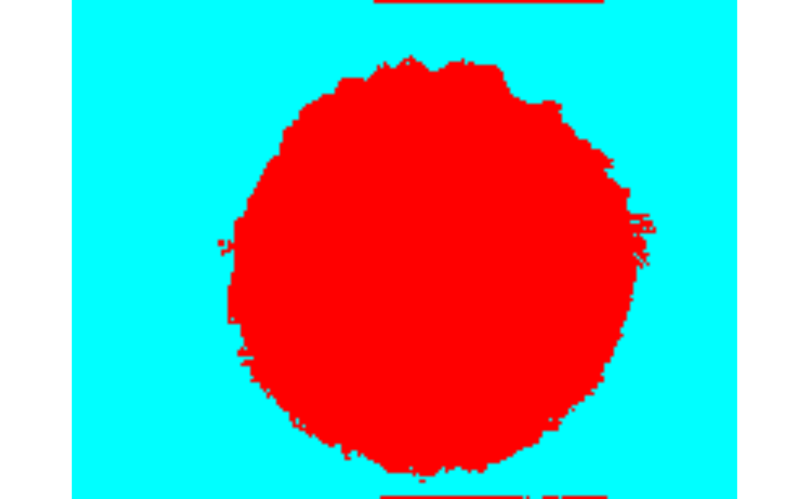
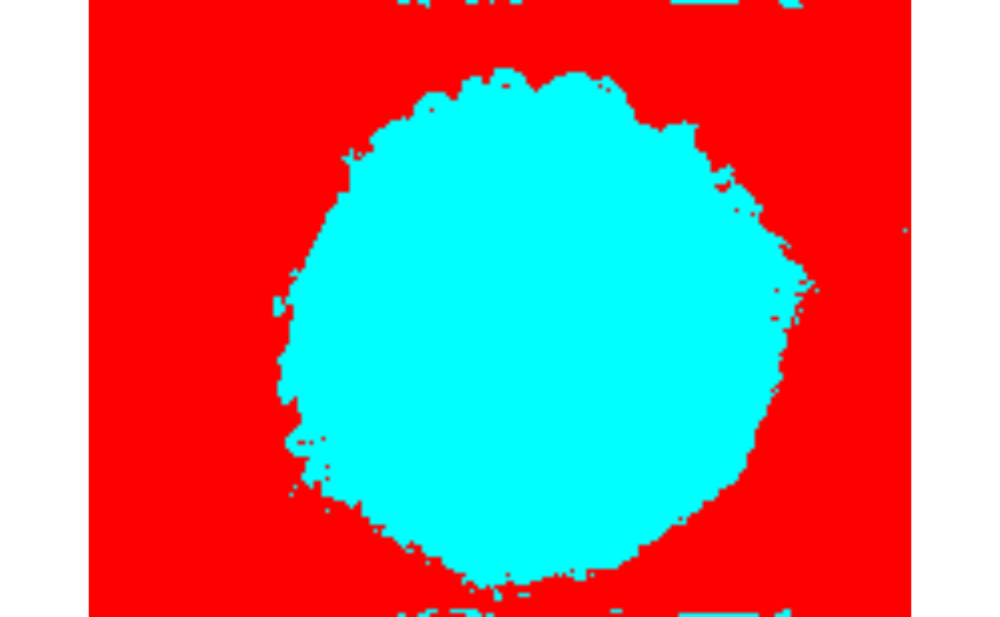

alternative_classifiers
alternative_classifiers.Rmdlibrary(clasifierrr)
library(clasifierrr)
library(EBImage)
library(ranger)
library(caret)
#> Loading required package: lattice
#> Loading required package: ggplot2
library(kernlab)
#>
#> Attaching package: 'kernlab'
#> The following object is masked from 'package:ggplot2':
#>
#> alphaparams_df <- tibble::tibble(
file = c(
system.file(
"extdata", "tiny_4T1-shNT-1_layer1.png",
package = "clasifierrr"),
system.file(
"extdata", "tiny_4T1-shNT-1_layer2.png",
package = "clasifierrr")),
classif = c("spheroid", "bg"),
related_file = system.file(
"extdata", "tiny_4T1-shNT-1.png",
package = "clasifierrr")
)
params_df
#> # A tibble: 2 x 3
#> file classif related_file
#> <chr> <chr> <chr>
#> 1 /tmp/RtmpGL73Jd/temp_libpath5cdb… sphero… /tmp/RtmpGL73Jd/temp_libpath5cdbb1a…
#> 2 /tmp/RtmpGL73Jd/temp_libpath5cdb… bg /tmp/RtmpGL73Jd/temp_libpath5cdbb1a…test_img <- readImageBw(params_df$related_file[[1]])
test_feat <- calc_features(test_img, filter_widths = c(3, 5, 15))
#>
#> Attaching package: 'purrr'
#> The following object is masked from 'package:kernlab':
#>
#> cross
#> The following object is masked from 'package:caret':
#>
#> lift
#> The following object is masked from 'package:EBImage':
#>
#> transposetrainset <- build_train_multi(params_df, filter_widths = c(3, 5, 15))
#> Returning for file: /tmp/RtmpGL73Jd/temp_libpath5cdbb1af11572/clasifierrr/extdata/tiny_4T1-shNT-1_layer1.png and classification" spheroid " a total of { 8556 } positive pixels
#> Returning for file: /tmp/RtmpGL73Jd/temp_libpath5cdbb1af11572/clasifierrr/extdata/tiny_4T1-shNT-1_layer2.png and classification" bg " a total of { 14056 } positive pixels
#> Warning in build_train(feat_img = calc_features(preprocess_fun_img(readImageBw(.x)), : The selected train size(50000) is larger than the number of classified pixels (22567) so the number is getting updated to the total number of available pixels
#> Classified objects are of classes {bg: 14056} and {spheroid: 8511}
#> Returning a data frame of 22567 rows and 13 columns
head(trainset, 2)
#> gauss_filt_3 gauss_filt_5 gauss_filt_15 DoG_filt_3 DoG_filt_5
#> 1 0.5411765 0.5377656 0.5318755 -5.375287e-10 -0.003410840
#> 2 0.5215686 0.5236642 0.5186847 2.986270e-10 0.002095602
#> DoG_filt_15 var_filt_3 var_filt_5 var_filt_15 sobel_filt_3 sobel_filt_5
#> 1 -0.007257111 0.0001897972 0.0002581201 0.0005308911 0.02352941 0.3780400
#> 2 -0.004084978 0.0002129391 0.0003168750 0.0047506307 0.16489252 0.3960978
#> sobel_filt_15 pixel_class
#> 1 3.235769 bg
#> 2 12.114109 bgThe general pattern is that you need to train a model that accepts the predict method, in this case we will use a simple logistic regression.
trainset2 <- trainset
# Logistic regressions need binary outputs
trainset2$pixel_class <- trainset2$pixel_class == "spheroid"
suppressWarnings({
model_simple_glm <- glm(
pixel_class~.,
data = trainset2,
family = binomial(link = "logit"))
model_simple_glm
})
#>
#> Call: glm(formula = pixel_class ~ ., family = binomial(link = "logit"),
#> data = trainset2)
#>
#> Coefficients:
#> (Intercept) gauss_filt_3 gauss_filt_5 gauss_filt_15 DoG_filt_3
#> 4.308e+00 9.060e+04 4.543e+04 -1.361e+05 2.298e+11
#> DoG_filt_5 DoG_filt_15 var_filt_3 var_filt_5 var_filt_15
#> NA 1.360e+05 -8.246e+02 1.503e+03 -6.338e+02
#> sobel_filt_3 sobel_filt_5 sobel_filt_15
#> 2.985e+00 1.175e-01 2.947e-01
#>
#> Degrees of Freedom: 22566 Total (i.e. Null); 22555 Residual
#> Null Deviance: 29910
#> Residual Deviance: 5527 AIC: 5551class_img <- classify_img(
classifier = model_simple_glm,
feature_frame = test_feat,
dims = dim(test_img))
#> Starting classification
#> Warning in predict.lm(object, newdata, se.fit, scale = 1, type = if (type == :
#> prediction from a rank-deficient fit may be misleading
#> Took 0.008171 secs to predict the image
display(class_img, method = "raster")ctrl <- trainControl(method = "cv", number = 2)
model_svmlinear <- train(
pixel_class~.,
data = trainset,
method = "svmLinear",
trControl = ctrl)
model_svmradial <- train(
pixel_class~.,
data = trainset,
method = "svmRadial",
trControl = ctrl)
model_glm <- train(
pixel_class~.,
data = trainset,
method = "glm",
trControl = ctrl)
#> Warning in predict.lm(object, newdata, se.fit, scale = 1, type = if (type == :
#> prediction from a rank-deficient fit may be misleading
#> Warning in predict.lm(object, newdata, se.fit, scale = 1, type = if (type == :
#> prediction from a rank-deficient fit may be misleading
model_glmnet <- train(
pixel_class~.,
data = trainset,
method = "glmnet",
trControl = ctrl)for (classifier in list(model_svmlinear, model_svmradial,
model_glm)) {
cat(paste(
"The model '",
classifier$modelInfo$label, "'\nHad a classification accuracy of:",
max(classifier$results$Accuracy), "\non its best iteration\n\n"))
}
#> The model ' Support Vector Machines with Linear Kernel '
#> Had a classification accuracy of: 0.970930962194224
#> on its best iteration
#>
#> The model ' Support Vector Machines with Radial Basis Function Kernel '
#> Had a classification accuracy of: 0.988079937748008
#> on its best iteration
#>
#> The model ' Generalized Linear Model '
#> Had a classification accuracy of: 0.965214703771925
#> on its best iterationNow that we have a model, we can use the classifier$finalModel object to predict our images. Note that not all models give the same type of output. Some of the will output a classification percentage and others will output an actual classification.
for (classifier in list(model_svmlinear, model_svmradial,
model_glm)) {
timetaken <- system.time({
class_img <- classify_img(
classifier$finalModel,
feature_frame = test_feat,
dims = dim(test_img))
})
if (length(unique(as.numeric(class_img))) < 20 &
colorMode(class_img) == Grayscale) {
class_img <- colorLabels(class_img)
}
display(class_img, method = "raster")
}
#> Starting classification
#> Took 0.06815 secs to predict the image
#> Warning in classify_img(classifier$finalModel, feature_frame = test_feat, : Found in the final classification {12352} values more than 1 and {0} values less than 0, This might be undesired in the final image and lead to inconsistencies
#> Starting classification
#> Took 1.628 secs to predict the image
#> Warning in classify_img(classifier$finalModel, feature_frame = test_feat, : Found in the final classification {12552} values more than 1 and {0} values less than 0, This might be undesired in the final image and lead to inconsistencies
#> Starting classification
#> Warning in predict.lm(object, newdata, se.fit, scale = 1, type = if (type == :
#> prediction from a rank-deficient fit may be misleading
#> Took 0.004944 secs to predict the image